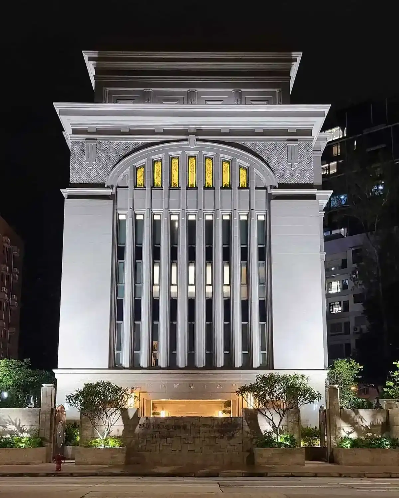

Skip to content
Temple Album
☰
Home
Old
New
Large
Small
Home
San Diego California
Accra Ghana
Maputo Mozambique
São Paulo Brazil
Rome Italy
Paris France
Johannesburg South Africa

Hong Kong China
Provo City Center
 Provo City Center
Provo City Center